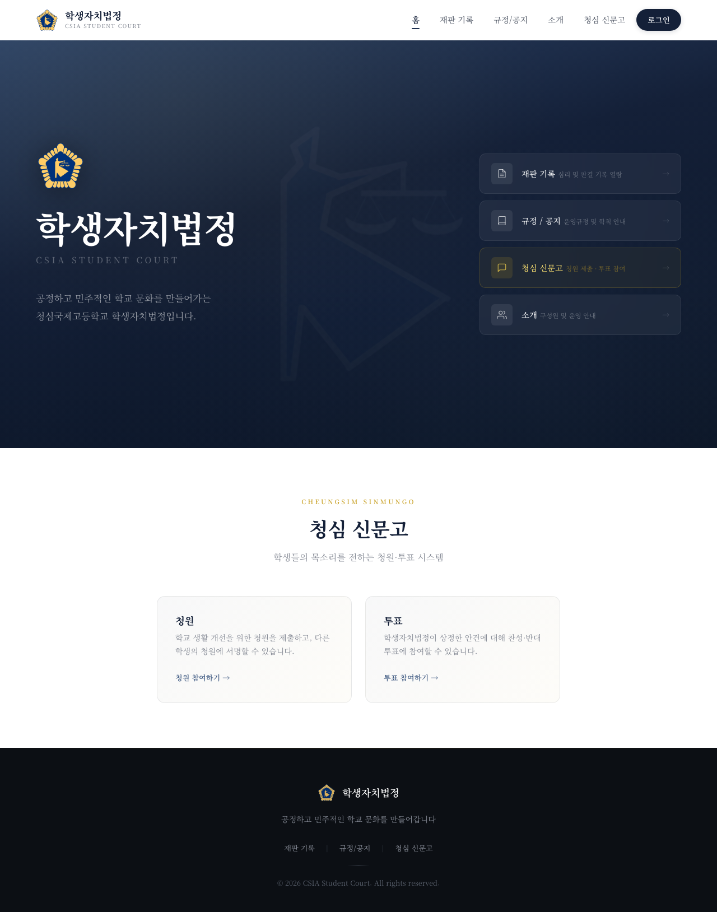
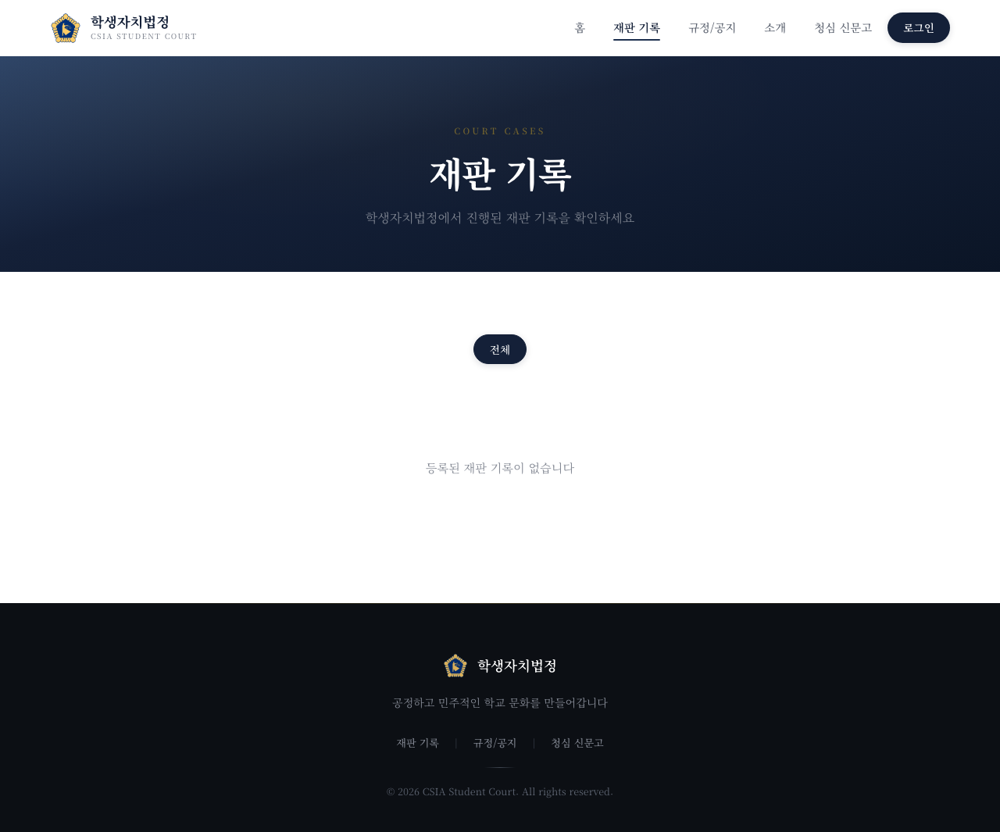
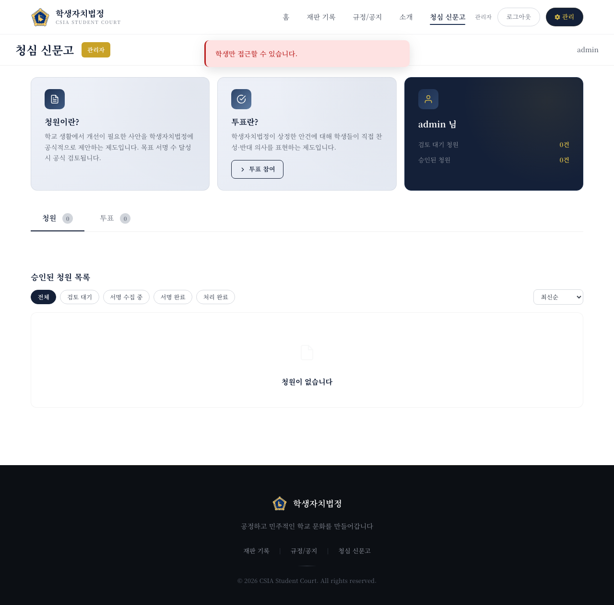
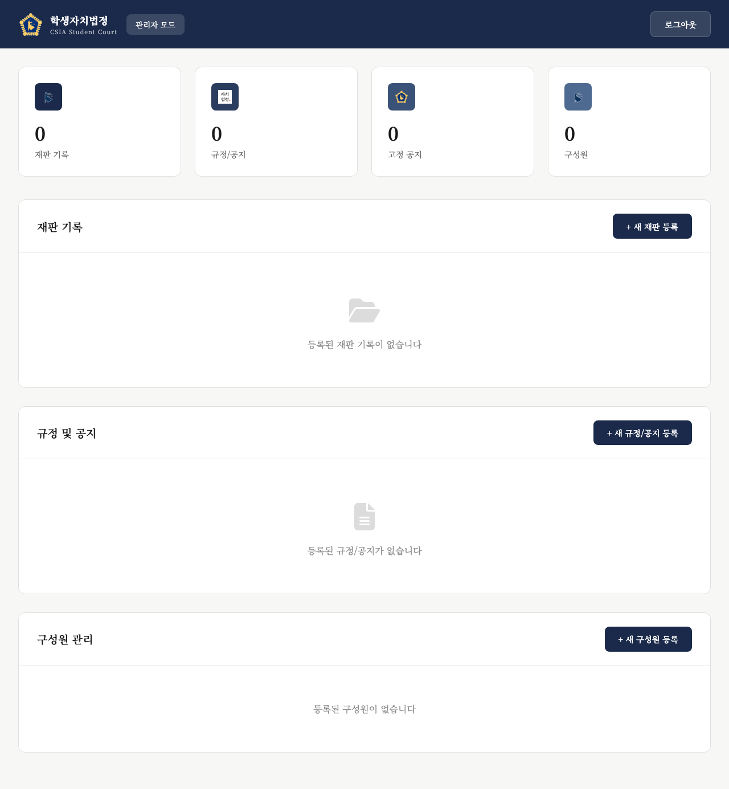
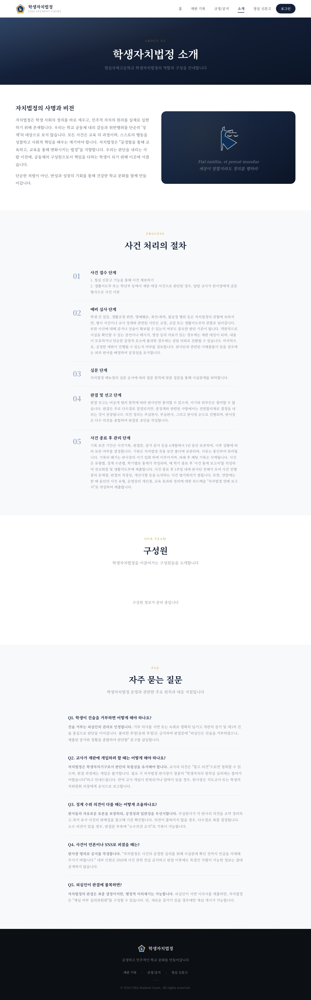
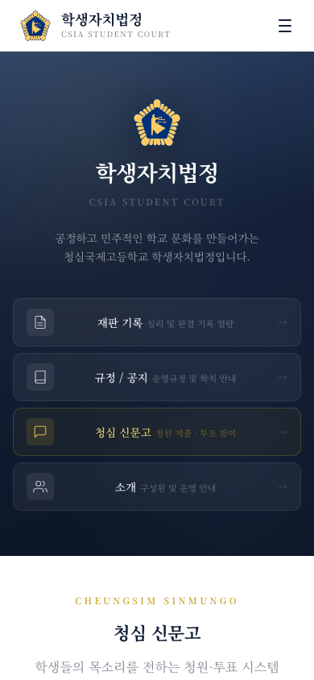

Project · Web development
csiasc.com — Student Self-Governance Court
A web platform I built end-to-end for my school's student self-governance court (학생자치법정) and the 청심신문고 student petition system at CheongShim International Academy. It digitizes how cases, rules, petitions and votes are managed, replacing scattered paper and message-board processes.
What it does
- Cases & rules: public, searchable records of court cases and the school's self-governance rules.
- 청심신문고 petitions & voting: students submit petitions and vote, giving the student body a structured voice.
- Member accounts: registration and login for students and court members.
- Admin dashboard: staff manage cases, rules, members, reviews and petitions from one place.
- Responsive: works on phones for on-the-go access.
Tech
Built with Flask and SQLite, deployed with gunicorn. I joined the 자치법정 TF club through this site. The production site (csiasc.com) is currently offline; the screenshots below show the running application.
Screens





